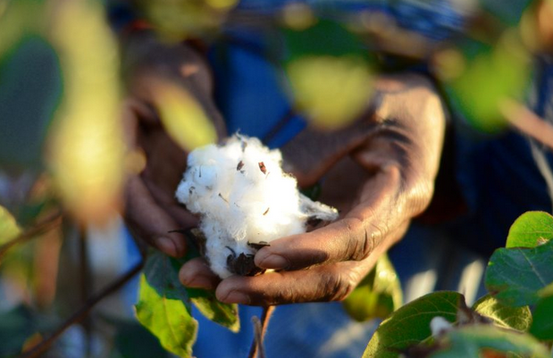
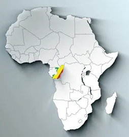
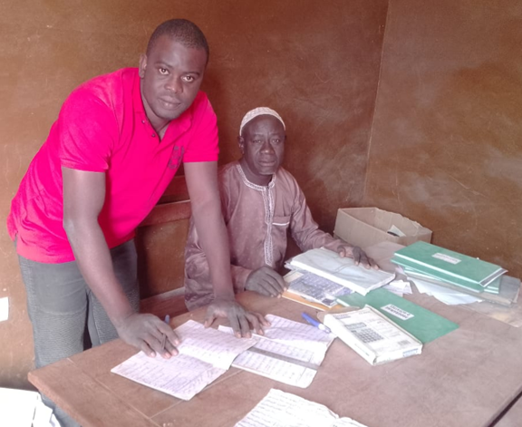
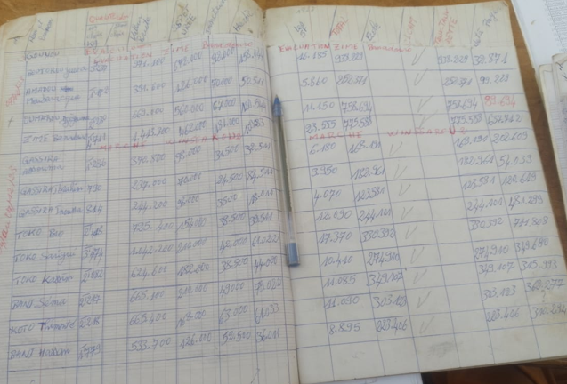

flowchart TD
A[Producteurs] --> B{Coopératives}
B --> C(Union communale<br> de coopératives)
C --> D(Fédération<br>nationale)
D --> E(AIC)
B --> G[Usines] ---> E(AIC)
Première Expérience en Analyse de Données
Présentation
L’exercice PEAD (Première Expérience en Analyse de Données) a été introduit en 2021-2022 pour les étudiants de 2A.
Cet exercice a pour objectifs de :
vous initier à la recherche bibliographiques dans le but de comprendre des données
mobiliser la démarche scientifique à travers l’identification de questions liées à ces données
utiliser R et RStudio afin d’analyser et tester les données dans le but de répondre aux questions posées
interpréter vos résultats afin de dégager des conclusions et une vision critique

Cadre thématique
Thématique 2025-2026
Pour cette année, nous avons choisi de travailler avec vous sur la culture du coton dans le contexte agricole du Benin. Les données sont issues du travail de thèse de Renaud Florentin Azanma.


Filière du coton et présentation de la thèse
La thèse de Renaud s’inscrit dans le cadre de la filière cotonnière au Bénin. Elle est menée conjointement à l’Université de Parakou et à l’ISTOM.
Titre de la thèse
Analyse et caractérisation des systèmes de culture du coton à haute performance pour une conception de systèmes plus durables et économiquement viables au Bénin.
Encadrants
- Prof. Hugues Kossi BAIMEY – Université de Parakou
- Marc Oswald – ISTOM
- Inès SHILI-TOUZI – ISTOM
Défis majeurs de la filière
- Assurer une amélioration durable de la fertilité des sols et des rendements en coton.
- Réduire l’usage des engrais et pesticides chimiques afin de limiter les impacts environnementaux.
- Adapter les systèmes de production cotonniers aux changements climatiques.
Objectifs et positionnement de la thèse
- Caractériser les systèmes agricoles cotonniers à haute productivité
- Identifier et analyser les exploitations les plus performantes
Pourquoi se concentrer sur les exploitations à haute performance ?
Les exploitations à haute performance représentent un potentiel encore peu exploité au Bénin :
Selon la litérature certaines exploitations atteignent des rendements presque doublés (jusqu’à 2000 kg/ha ou plus) (Westerberg et al., 2017 ; Aifa, 2022).
Ces exploitations restent marginales et peu étudiées, mais elles sont considérées comme des modèles de production au sein des coopératives cotonnières.
Les pratiques mises en œuvre par ces agriculteurs méritent d’être analysées pour :
- Identifier les pratiques les plus performantes, tant sur le plan économique qu’agro-environnemental.
- Comprendre les facteurs de réussite et les stratégies permettant de maintenir ces performances dans le temps.
Elaboration des bases de données
Bases de données par coopératives
- Référencement selon la carte administrative.
- Intégration des données issues des sondages réalisés dans les coopératives.
Objectifs du sondage
- Évaluer la dynamique de production des cotonculteurs.
- Identifier les différents profils de bons producteurs de coton.
- Comprendre la diversité des exploitations cotonnières dans la zone d’étude.

Données utilisées
- Cahiers de 79 coopératives sur 83 de la commune de Bembèrèkè (11 ont été choisies).
- Cahiers de crédits intrants : quantités d’engrais, herbicides, insecticides, et superficies en coton.
- Cahiers d’achats de coton-graine : production, prix des intrants, revenus et dettes.
Zone de sondage : Bembèrèkè
- Située entre 8°30’ et 10°45’ de latitude Nord.
- Climat soudano-sahélien avec une seule saison des pluies de 80 à 110 jours.
- Pluviométrie annuelle : 600 à 950 mm.
- Cultures dominantes : céréales (maïs, sorgho, mil), coton, soja et igname.
- Deuxième zone de production de coton du pays.
- Terres cultivées généralement peu fertiles et très sensibles au lessivage.
- 481 coopératives recensées (AIC, 2019).
Constitution de la base de données
- Collecte et photographie des différents cahiers des coopératives.
- Sélection de 11 coopératives sur la base de la disponibilité des cahiers couvrant les trois dernières campagnes cotonnières (2022, 2023 et 2024).
- Saisie des données des cahiers dans Excel pour traitement et analyse.

Progression
Timeline
JUSQU'AU 27 MARS
Step 1 & 2 : Mise en contexte
Étude bibliographique et statistiques descriptives. Livrable : Données nettoyées et exploration initiale.
03 AVRIL
Cadrage et objectifs
Validation définitive de la problématique et formulation des hypothèses de recherche.
AVRIL (MOIS COMPLET)
L'analyse statistique
Analyses approfondies sur RStudio (tests d'inférence, corrélations) en lien avec les cours de statistiques.
DERNIÈRE SEMAINE D'AVRIL
Mise en forme
Production du rapport Word via Quarto et création du support de présentation PowerPoint.
PREMIÈRE SEMAINE DE MAI
Cloture et Soutenance
Dépôt du manuscrit final et présentation orale de 15 minutes (10' exposé + 5' questions).
Step 1 - Bases de données
Vendredi 28 Novembre 2026
Les bases de données ont été difusées à chaque groupe :
- Groupe 1 - Bedari
- Groupe 2 - Bereke Centre
- Groupe 3 - Beroubouay Est
- Groupe 4 - Bokobouerou
- Groupe 5 - Gamia Est
- Groupe 6 - Hangar Peuh
- Groupe 7 - Ina Gando
- Groupe 8 - Kassarou
- Groupe 9 - Kossou
- Groupe 10 - Pedarou
- Groupe 11 - Sissigourou
Votre dossier est un espace de travail, tous vos documents doivent y être déposé.
Le jeu de données comprend 26 variables documentant l’activité de production cotonnière sur trois campagnes successives (2022, 2023, 2024). Les données brutes, incluant des valeurs manquantes (NA), sont archivées dans le dossier data_raw.
Identification de l’Exploitant
Numero_Individu: Identifiant numérique unique attribué à chaque exploitant pour faciliter le traitement statistique.Individu: Nom et prénom de l’exploitant.
Indicateurs d’Activité (Variables Binaires)
Pour chaque année (Recolte_2022, Recolte_2023, Recolte_2024), la donnée est codée ainsi :
1: Une récolte a été réalisée.0: Aucune récolte n’a eu lieu.
Variables de Production et Intrants (Répétées par année)
Chaque campagne dispose de 7 variables spécifiques :
| Variable | Unité | Description |
|---|---|---|
Superficie |
Hectare (ha) | Surface totale cultivée |
Production |
Kilogramme (kg) | Quantité de coton récoltée |
Valeur_Production |
Franc CFA | Revenu brut de la récolte |
Herbicide |
Franc CFA | Coût total investi en herbicides |
Engrais |
Franc CFA | Coût total investi en engrais |
Insecticide |
Franc CFA | Coût total investi en insecticides |
Dette_Intrants |
Franc CFA | Montant des crédits liés aux intrants |
Note sur la qualité des données
Certaines variables présentent un taux élevé de valeurs manquantes (NA). Ce point fera l’objet d’un traitement spécifique lors de la phase d’analyse exploratoire pour décider de l’imputation ou de l’exclusion de certaines observations.
Travail à faire .
Il vous est demandé de synchroniser votre base de données sur votre ordinateur personel, comme indiqué à ce lien.
Step 2 - Mise en contexte
Vendredi 27 Mars 2026
Objectif : Savoir de quoi on parle et avoir des données propres.
Étude bibliographique :
Réaliser une étude bibliographique sur la filière coton afin de justifier et contextualiser votre travail.
La recherche devra être menée de manière progressive, en commençant par une analyse à l’échelle mondiale, puis en se focalisant sur la situation en Afrique, avant de terminer par le cas spécifique du Bénin.
L’objectif est d’obtenir une vision globale de l’état actuel de la filière coton ainsi que des principaux enjeux économiques, sociaux et environnementaux associés.
Étude exploratoire :
À partir de votre base de données, vous devez réaliser une analyse statistique descriptive, à la fois univariée et multivariée, afin de mettre en évidence les caractéristiques principales du jeu de données et de comprendre les dynamiques qui y sont présentes.
Référentiel Économique des Intrants
Ce guide vous permet de convertir les valeurs monétaires (F CFA) en quantités physiques (Litres, Sacs, Flacons).
Insecticides (Protection des cultures) : Le montant saisi correspond au cumul des flacons achetés. Un flacon de 125 ml coute 3 500 F CFA.
Engrais (Nutrition des sols) : Le montant cumulé intègre trois types d’engrais (Sacs de 50 kg) :
Urée : 15 000 F CFA / sac
Super Simple Phosphate (SSP) : 14 000 F CFA / sac
NPKSB : 17 000 F CFA / sac
Calcul moyen : Utilisez la valeur de 15 333 F CFA / sac de 50 kg pour vos estimations globales de volume.
Herbicides (Désherbage) : Les herbicides sont souvent utilisés en mélanges (Glyphosate 3 500 F / L ; Pré-levée : 7 500 F / hectare ; Post-levée : 8 500 F / hectare). Pour vos calculs, vous pouvez soit choisir de rester avec la valeur monétaire, soit considérer un prix moyen de 6 500 F CFA le litre.
Pour enrichir votre analyse et donner du sens aux chiffres bruts, il est fortement conseillé de définir de nouveaux indicateurs. Vous pouvez, par exemple, utiliser les suggestions d’indicateurs présentés ci-dessous :
| Indicateur par année | Calcul | Intérêt de l’analyse |
|---|---|---|
Rendement |
Production / Superficie | Mesurer l’efficacité agronomique (kg/ha). |
Bilan_financier |
Valeur_Prod - Dette_Intrants | Estimer le revenu réel après remboursement. |
Charge_ha |
Intrants / Superficie | Évaluer le niveau d’investissement technique par ha. |
Ratio_prod |
Production / Intrants | Calculer le kg de coton produit par CFA investi. |
Taux_dettes |
Dette / Valeur_Prod | Mesurer la part du revenu absorbée par les crédits. |
Evol_Rendement |
Variation (%) entre années | Analyser la progression de la performance. |
Ce travail sera réalisé sur R.
Livrable intermédiaire :
Votre analyse sera synthétisée via Quarto, un outil de pointe en science des données qui permet de fusionner vos explications textuelles, vos codes R et vos résultats au sein d’un même document. L’intérêt majeur de ce format réside dans la reproductibilité de vos recherches : toute modification de vos données ou de vos calculs mettra automatiquement à jour vos graphiques et vos tableaux, garantissant ainsi une rigueur scientifique et un rendu professionnel incluant une gestion automatisée de la bibliographie.
Mise en garde
Afin de faciliter votre montée en compétence, je mettrai en forme sur Quarto cette étape de votre étude. Ce modèle structuré vous servira de base technique que vous pourrez vous approprier et compléter de manière autonome pour la suite du projet.
Pour cette étape, vos livrables sont donc les suivants :
Un document Word synthétisant votre étude bibliographique.
Un script R complet détaillant votre analyse exploratoire.
Step 3 - Cadrage et objectifs
Vendredi 3 Avril 2026
Objectif : Passer du “on regarde les données” à “on répond à une question”.
Validation des problématiques :
À partir de votre analyse exploratoire et de votre travail bibliographique, vous définirez un ou plusieurs axes de travails.
L’objectif est d’identifier, d’analyser les “bons” producteurs, selon des critère que vous difinirez.
Information
Vous validerez votre problématique avec Mme Shili-Touzi lors d’un entretien par groupe. Deux entretiens maximum seront accordés à chaque groupe.
Ne pas hésiter à poser vos question par mail également.
Step 4 - L’analyse statistique
Avril 2026
L’objectif de ce mois d’avril est de transformer vos données nettoyées en résultats scientifiques concrets répondant à votre problématique.
Ce travail analytique sera réalisé exclusivement sur RStudio et constituera une mise en application directe de vos cours de statistiques.
Chaque test choisi devra être justifié par la nature de vos variables, les questions auxquelles vous souhaiterez répondre et par la vérification des conditions d’application, exactement comme vu en cours.
Step 6 - Mise en forme
Fin avril 2026
L’objectif de cette ultime étape est de passer de l’analyse brute à une communication scientifique de qualité.
Vous devrez produire un rendu complet et intégré sur Quarto, capable de générer automatiquement un fichier Word parfaitement structuré (incluant introduction, bibliographie, méthodologie, résultats commentés et conclusion).
En parallèle, vous préparerez une présentation PowerPoint synthétique.
L’enjeu est ici de démontrer votre capacité à vulgariser des résultats complexes.
Step 7 - Clôture et Soutenance
Début mai 2026
Cette phase marque l’aboutissement de votre projet avec le rendu final de votre manuscrit Word, intégralement généré via Quarto. Ce document devra démontrer votre maîtrise de la chaîne de traitement de données, de la bibliographie à l’interprétation statistique.
Le point d’orgue sera votre soutenance orale de 15 minutes : un exercice de synthèse où vous disposerez de 10 minutes pour exposer votre démarche et vos résultats majeurs, suivies de 5 minutes d’échanges avec le jury.
Ce sera l’occasion de défendre vos conclusions, de justifier vos choix méthodologiques et de montrer la pertinence de votre regard critique sur les enjeux de la filière coton au Bénin.
Mise en forme par Antoine Géré.